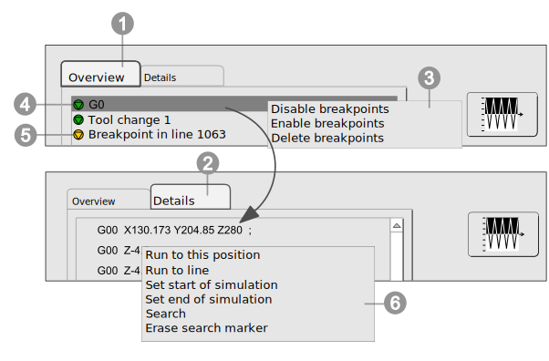
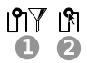

8.2. Setting up and configuring breakpoints
|  |
 Overview: List of defined breakpoints. Double-click to make a breakpoint editable and assign a name of your choice.
Overview: List of defined breakpoints. Double-click to make a breakpoint editable and assign a name of your choice.
 Details: Coordinate values of a breakpoint as VNC or NC program file.
Details: Coordinate values of a breakpoint as VNC or NC program file.
 Shortcut menu on the Overview tab (list display). Select one or several breakpoints by clicking with the left mouse button, right-click and then select the Disable breakpoint,
Enable breakpoint or Delete breakpoint function to either disable, enable or delete the breakpoint respectively (see figure 10).
Shortcut menu on the Overview tab (list display). Select one or several breakpoints by clicking with the left mouse button, right-click and then select the Disable breakpoint,
Enable breakpoint or Delete breakpoint function to either disable, enable or delete the breakpoint respectively (see figure 10).
 Active breakpoint,
Active breakpoint,  Inactive breakpoint.
Inactive breakpoint.
 Shortcut menu on the Details tab (coordinate values). Approach a specific breakpoint via the shortcut menu or set as the start/end of the program run (see the figure ‘Setting up and configuring breakpoints’).
The shortcut menu is the same as the shortcut menu in the block display. This way, specific breakpoints can be approached and they can also be set as the start and end of the program run.
Shortcut menu on the Details tab (coordinate values). Approach a specific breakpoint via the shortcut menu or set as the start/end of the program run (see the figure ‘Setting up and configuring breakpoints’).
The shortcut menu is the same as the shortcut menu in the block display. This way, specific breakpoints can be approached and they can also be set as the start and end of the program run.
|

|
Insert a new breakpoint. Use the Stop [Number] Steps before the event option to stop the program run the required number of steps before the defined breakpoint in order to reduce the speed if required.
|